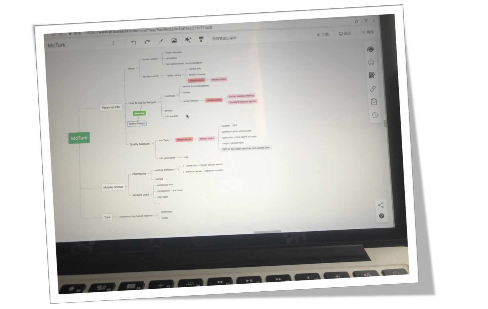
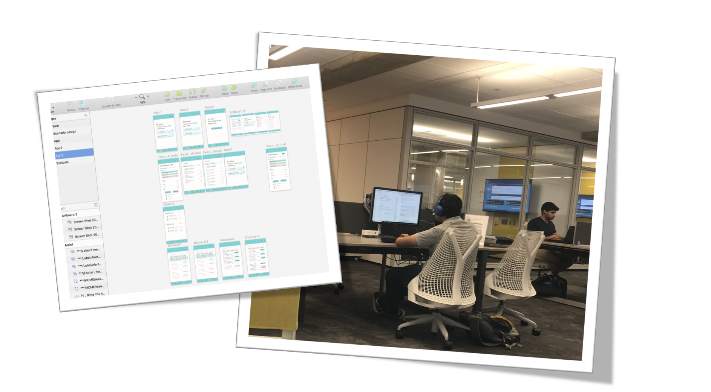
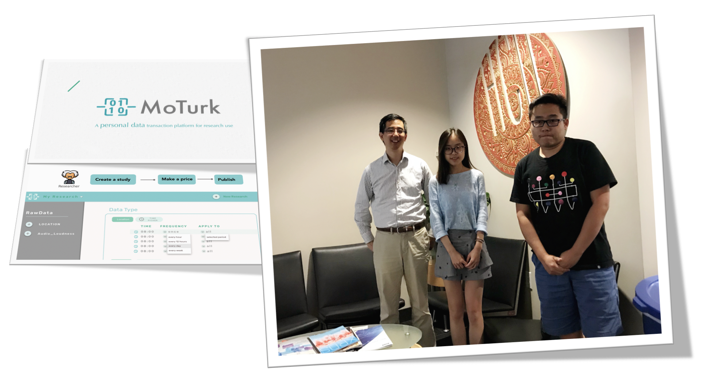
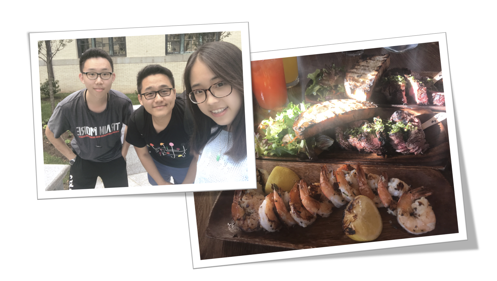

Brain storming

Prototying

Presentation and Discussion

we propose a mobile crowd sourcing platform, MoTurk, for transactions of mobile sourced personal data between the general public and researchers through a Mechanical Turk mechanism. we mainly reconcile the dilemma of flexible acquisition of mobile sensing data and privacy protection by summarizing features that support a four layer hierarchical model and implementing a functional programming model for data processing.
Mobile Phones are just every where. It unobtrusively collects various of our personal data.These kinds of personal data are of great research needs in various research areas. For, While Sleeping hours are strongly related to clinic health and academic performance, a better understanding of travel pattern can largely contribute to urban planning. However, current implementation of mobile sensing data for research use encounters two major difficulties: Data acquisition difficulty:Researchers typically need to develop a data collector app for collecting mobile sourced data(e.g.,coordinate, audio data). Moreover, as raw sensing data can hardly be used as behavior indications, further data transformation and processing methods are required. Privacy concern: Current 'Informed Consent' policy provides participants with less power of privacy control over how and to what extent their personal data are used. There also lack references for tangible value of personal data, making it hard for the public to decide whether or not to share their privacy.
MoTurk attempts to reconcile the dilemma between data acquisition and privacy protection via:(1)Online customization; (2)Feature extractor; (3)Privacy enforcement
MoTurk contains three stakeholders, researchers, users and MoTurk server respectively.In the study setting stage, researchers will be able to create studies with specific research needs including types of data(mobility data, conversation data,etc.), requests for participants(age, occupation, etc.) and expected data granularity, sampling and data processing methods. Evaluations concerning privacy sensitivity and battery impact are also generated in this stage as a reference for price making.After a study has published, it will be pushed to the server and users who are qualified for this study are able to see it through MoTurk App on mobile phones. When viewing interested studies, users will be fully access to the information researchers created including basic information, required personal data, price and evaluations. When they finally choose to start this study, the data collecting stage automatically begins. their data begin to be collected and processed . All data will be updated and presented to both researchers and users with a 24 hour interval. Users will be paid at the end of studies.
To summarize meaningful behavioral features and statistics of mobile sourced data for research use, we covered 81 research papers in 6 domains. Data in need vary from different research domains of and mostly used kinds of data fall into 7 categories: Context, Conversation, Media Interaction, Sleep, Mobility(Location & Acitivity), App Usage, Phone States. Our platform attempts to extract and provide most useful features for research needs in each of these 7 categories.
We stratify mobile sourced personal data into a four layer hierarchical model, ranging from raw data to behavioral indications:Raw data data sampled directly from mobile sensors like accelerators, microphone, GPS, etc.Low Level Features meaningful statistics drawn from raw data which can represent or represent specific human behaviors;Implicit Behaviors inferred daily behaviors of human beings within a specific scenario. We draw a line between the second and third level simply by that the third level of data is the combination of several low level features.Personal Implications this level of data is not simply statistics but implications, which can be rather abstract and refer to attributes of users themselves.
We organize our provided data with a two hierarchy structure Snapshot: includes information of a momentary state, it mainly contains the timestamp and several features that researchers want to know at this point of time. Episode: is used to describe events that happen in your life and last for a period of time, it can not be described by a single point, but with common fields of starttime and duration and includes all the information during the entire event. Daytum: contains lists of points or events in a single day as well as several statistics that used to describe a single day performance.
To simplify both the data collection and processing process, MoTurk adopts an expressive personal data processing scheme, PrivacyStreams, to allow for rich customized needs by specifying parameters. This guarantees researchers can get the data in need without too much further data processing.PrivacyStreams provides a scalable and customizable structure for data processing. The stream processing model of PrivacyStreams allows customization of transformation methods and callback functions, also makes it possible to analyze how personal data is processed and what granularity of data is actually used. We enforce privacy by processing data transparently and locally.
Interfaces for researchers and users are separate, while researchers do all operations on the web interface, users interacts with mobile phone with MoTurk App.
Literature ReviewData Strictire ConstructionPaper writting
MoTurk was done in HCII,CMU. Many thanks to the guidance of Fanlin Chen and Prof. Jason Hong.